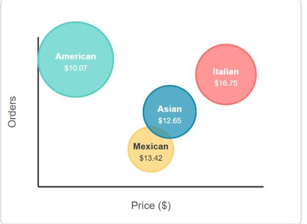
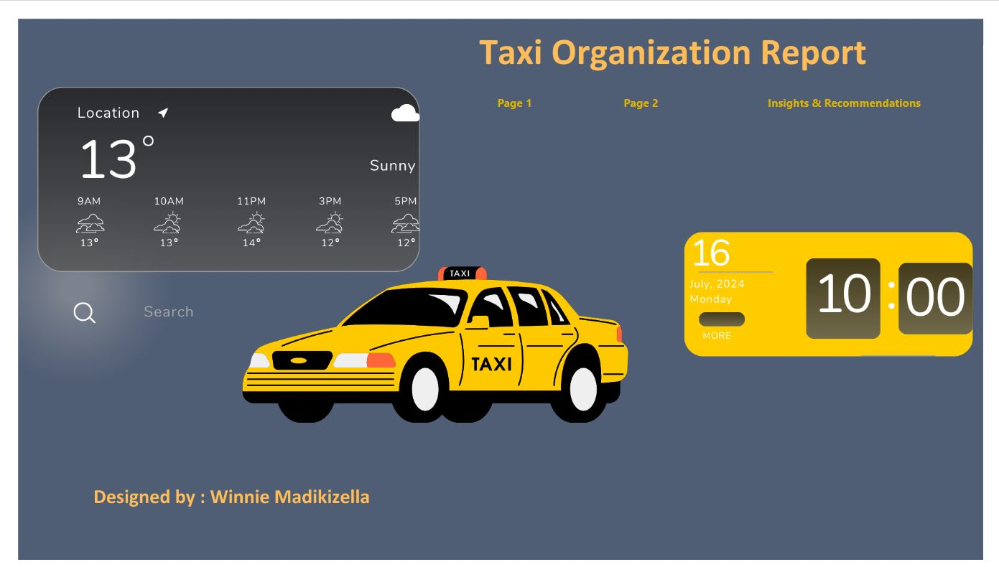
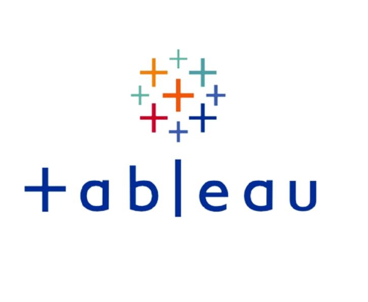

HealthyLife Medical Analysis: Unlocking Insights into Patient Demographics, Treatment Effectiveness, and Costs.
Utilizing Microsoft Excel with Power Query, Power Pivot, DAX, Pivot Tables, and Charts, I analyzed a dataset of 5,000 patients to uncover trends in medical conditions, treatment outcomes, and seasonal visit patterns.
The analysis identified common medical conditions, assessed treatment effectiveness, and revealed seasonal visit patterns to enhance resource allocation.
I developed an interactive Excel dashboard featuring key metrics and slicers for improved data visualization and decision-making.


I analyzed restaurant sales data using SQL to uncover customer preference patterns across 5,370 orders.
The analysis revealed key insights: Italian dishes dominated high-value orders despite premium pricing,
while popular American items like the bestselling Hamburger showed pricing potential.
By connecting ordering patterns with pricing strategies, I developed targeted recommendations for menu optimization and customer experience enhancements.

I built an interactive Power BI dashboard to analyze taxi service operations over three months,
uncovering revenue patterns, peak operating hours, trip behaviors, and the impact of external factors like weather and surge pricing.
Using DAX formulas and advanced visualizations, I provided insights and recommendations to optimize performance and improve customer experience.

My Tableau visualization projects demonstrate my ability to transform complex datasets into compelling visual stories that drive business decisions.
Each project showcases my technical proficiency in Tableau, data storytelling, and uncovering actionable insights across industries.

Stay tuned! A new project will be added here soon.